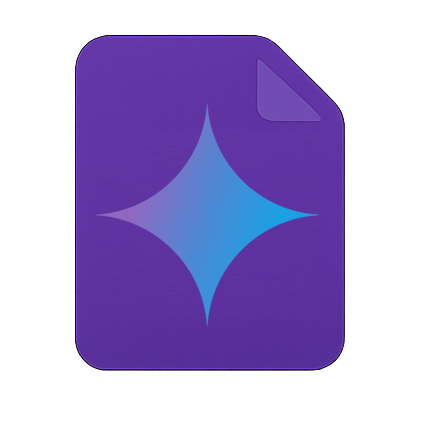

Gemini Coder
☀️
✨ New Task...
Base Directory:
Index Codebase
Last Indexed: Never
Path relative to server or absolute. Ensure server has permissions. Required.
Your Instructions:
📎
Continue context from previous run? (If available for this base dir)
Temp:
1
Start Task
Logs & Progress
Current Context
(Context loads here after task starts)
Confirmation required...
Yes
Yes to All
No
Question from Gemini...
Submit
Yes
No